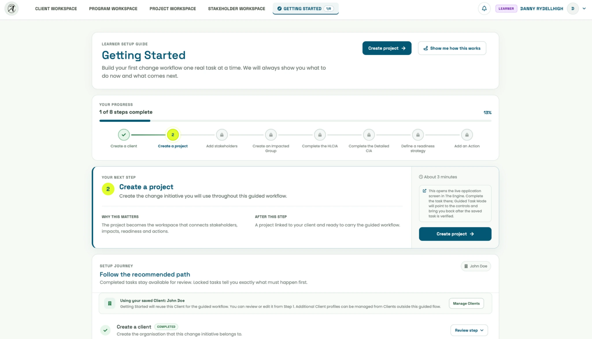
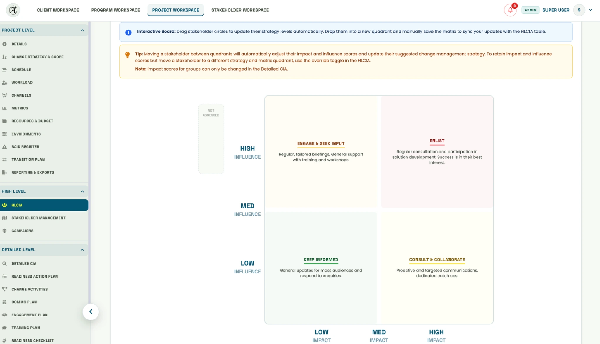
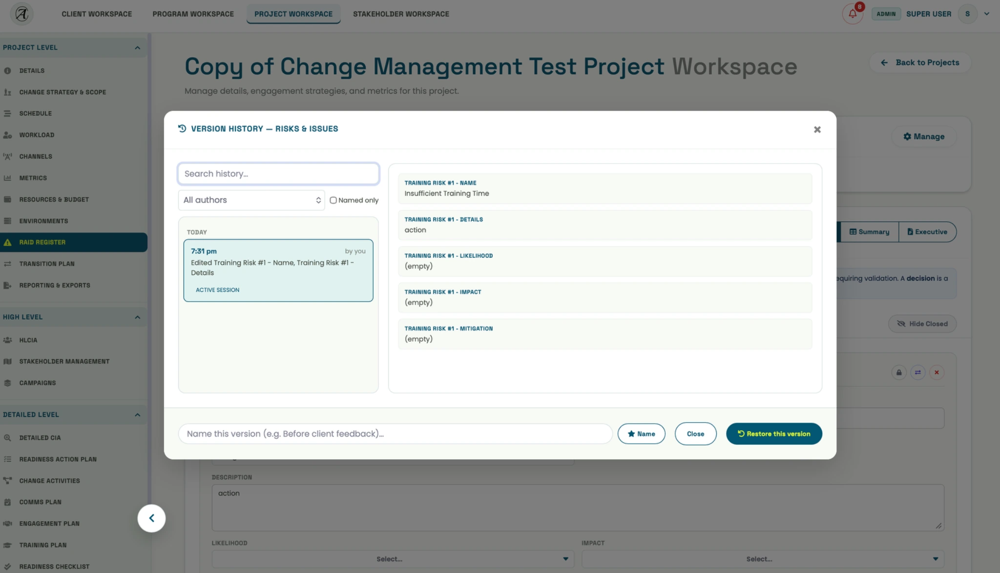
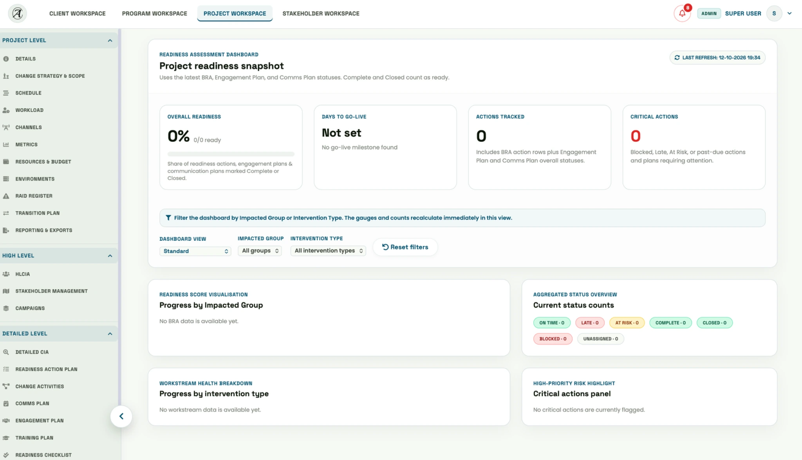
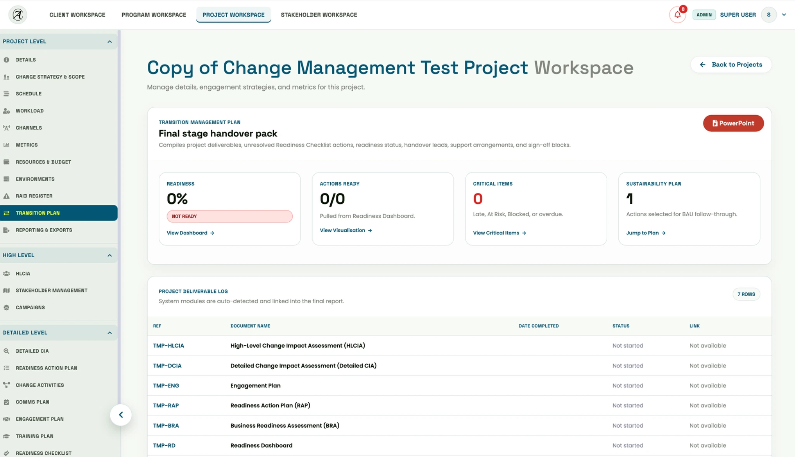

Make the next action obvious
The current task pairs a named action with “Why this matters” and the expected output.
Industry client project · Monash IE · Team 188 · 2026
Making a complex change platform easier to start using.
My BA/UX focus was Getting Started: helping a new user understand what to do next, why it matters and how to continue from saved work.
My primary focus · Getting Started
A first-time user needs a route through the platform’s connected records and assessments. The onboarding view brings the sequence, the current task and the reason for that task together.

Enlarge imageThe current task pairs a named action with “Why this matters” and the expected output.
Completed, current and locked steps make the order of work visible across the eight-step journey.
The saved client can be reused, and completed steps remain available for review.
Business analysis into practical delivery
Within the team’s work on an existing platform, I took primary responsibility for the Getting Started experience. My contribution connected onboarding decisions, feedback, acceptance scenarios and handover clarity.
| My work | Purpose | Acceptance scenario |
|---|---|---|
| Getting Started journey Refined the guided sequence, next-step instructions and review behaviour. | Give learners a usable route through connected tasks. | A learner with a saved client continues to the project step without creating another client. |
| Terminology and navigation Reviewed action labels, “Impacted Group” wording, return paths and guidance placement. | Keep instructions consistent with the destination screen. | The named action opens the expected screen, and guidance leaves required controls accessible. |
| Progress and recovery Reviewed saved-state, existing-record and completed-step behaviour. | Let users continue and inspect work already completed. | Returning to Getting Started shows the saved work and the relevant next task. |
| UAT and handover Prepared acceptance scenarios and reviewed user-facing documentation. | Turn feedback into checks the team can repeat and explain. | Expected behaviour is stated clearly enough to compare with an observed result. |
These are acceptance scenarios describing the intended behaviour. The screenshots document interface states; they are not a final test pass-rate report.
Project presentation · 29 October 2026
The showcase display names William Tan as Business Analyst. Alongside the system captures, this photo adds context to the role and the team delivery.
My work sits within a wider platform developed across contributors. The screens below show that broader product context.
Official Monash project showcase Enlarge image
Enlarge imageActual product screens · Team context
Select any screen to enlarge it and browse all six images.
These modules show the change-planning environment that new users enter. They are team-platform capabilities; my primary personal focus is the Getting Started work above.

The matrix explains how impact and influence inform engagement strategies. This empty workspace illustrates the wider change-planning context for onboarding.

A captured history view exposes a saved edit and a restore action. This is a team-platform capability, shown as context rather than individual authorship.

Readiness, actions and status filters bring planning information into one view. The screenshot contains no readiness records; its 0% is an empty-state value.

The handover view connects readiness, deliverables and follow-through. Values and Not started labels belong to the captured test workspace.
The empty and test-workspace values reflect the captured screen state. They are not adoption, delivery completion or business-impact measures.
Public team introduction
The team introduction complements the still images with a project overview.
What this work demonstrates
This project is a concrete example of my ability to break a complex workflow into understandable tasks, refine terminology with the team and translate feedback into acceptance scenarios. A next evaluation step would be to observe first-time users completing the journey and measure task completion and points of confusion.
Continue the conversation
I can explain the task sequence, returning-user scenarios and the work I contributed.